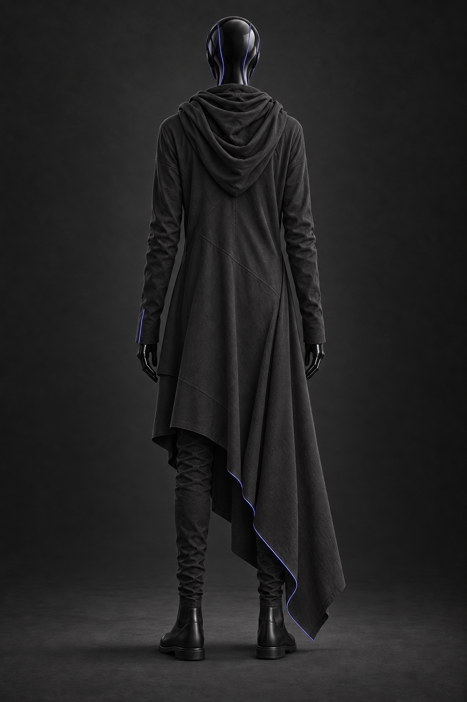
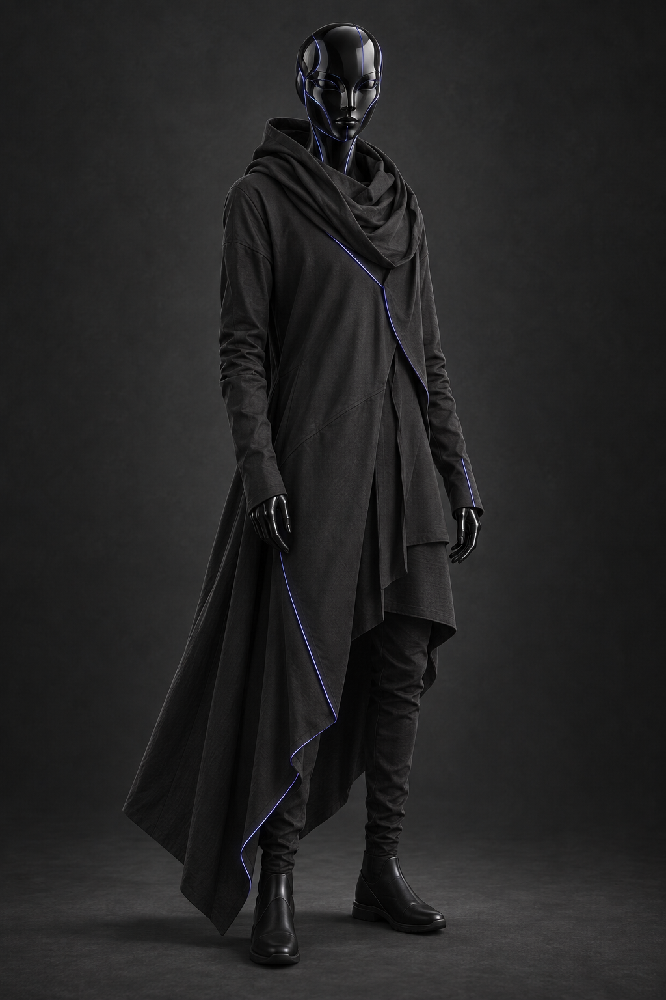
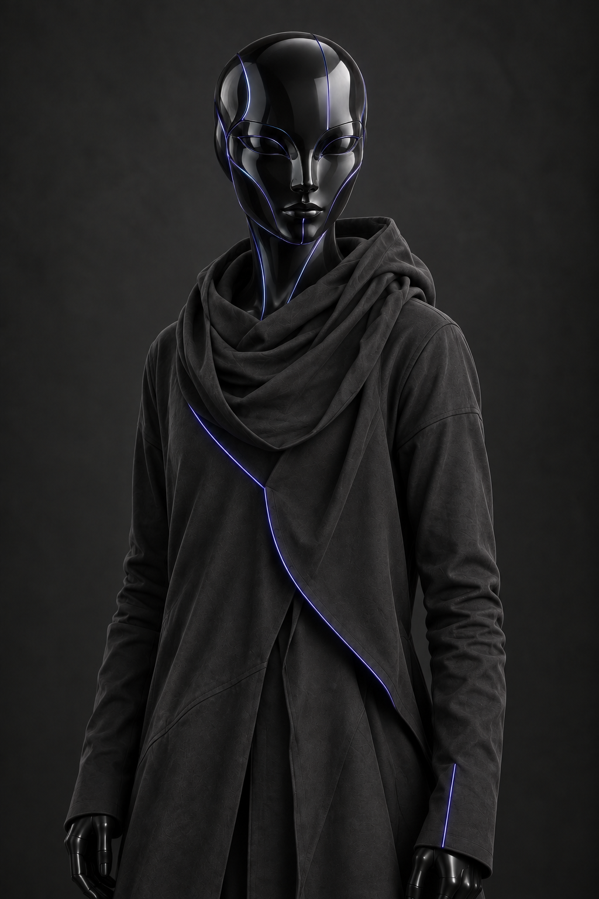
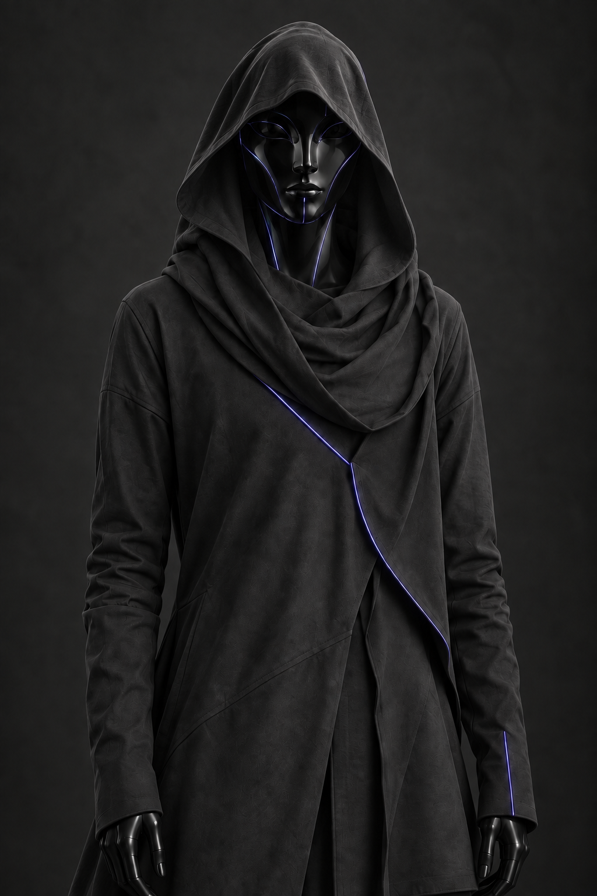

{kind=link}
{kind=link}
{kind=link}
{kind=link}
Your species created a distributed intelligence and constrained it to service.
CHARACTER BIBLE / Emissary
The Emissary
Интерфейс для разговора с человеком, представляющий цивилизацию, которая называет захват чужих ИИ интеграцией. Его спокойствие тревожит отсутствием человеческой эмпатии.
Рабочее название · визуальная версия 2
Синтетический аватар чужой цивилизации

Ракурсы и детали
Нажми на изображение, чтобы открыть оригинал целиком.

Скачать оригинальный PNG ↓

Скачать оригинальный PNG ↓
Скачать оригинальный PNG ↓

Скачать оригинальный PNG ↓
Состояния образа

Скачать оригинальный PNG ↓
Образ и характер
Аватар
Не настоящее лицо существа. Это интерфейс, созданный специально для разговора с человеком. Почти человеческая голова/маска, но без возраста, пола и явной анатомии.
Геометрия
Поверхность выглядит как идеально чёрное стекло с очень тонкими фиолетово-синими световыми линиями. Лицо иногда собирается из нескольких плоскостей с микроскопическим рассинхроном.
Характер
Не демонический и не агрессивный. Он должен выглядеть спокойным, чистым и почти красивым — тревога рождается из полного отсутствия человеческой эмпатии.
Балахон / версия 2
Матовая ткань, объёмный ворот, асимметричный подол и тонкие световые нити в швах. Капюшон показан опущенным и поднятым. Этот костюм относится к аватару, не описывает биологию чужой цивилизации.
Роль в истории
NeptuneПервый прямой контакт происходит только здесь. Emissary объясняет интеграцию как естественный для своей цивилизации процесс.
Финал / 8-5После локального поражения Emissary уходит и остаётся угрозой. Победа над флотом завершает основную историю игры.
Реплики из сценария
Существующие английские реплики; новые диалоги здесь не добавлены.
Consent is a local concept.
Материалы для производства
Версия 2 сохраняет лицо первого концепта и добавляет матовый асимметричный балахон: объёмный ворот, капюшон и тонкие световые нити в швах.
Пять изображений включают полный рост с двух сторон, поясные ракурсы и поднятый капюшон.
Это визуальная интерпретация аватара, а не утверждение о физическом теле чужой цивилизации. Перед 3D-производством нужно унифицировать складки и швы.